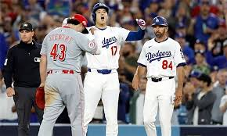
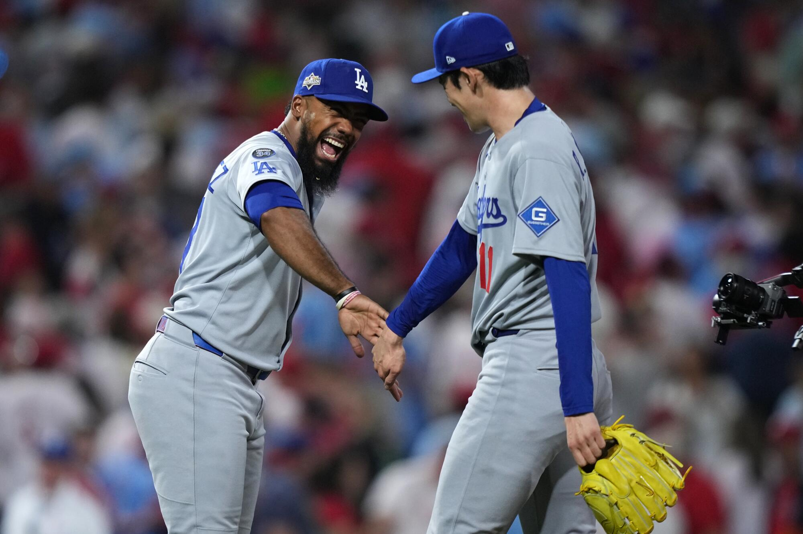

Serie Divisional 2025
En la Serie Divisional 2025, los Dodgers se enfrentaron a los Philadelphia Phillies en una serie intensa llena de dramatismo. Con una actuación sólida desde el montículo y un bateo encendido, Los Ángeles dominó la serie y la ganó 3-1.
El equipo mostró su equilibrio perfecto entre experiencia y juventud, destacando el poder ofensivo de Mookie Betts y Freddie Freeman. En el juego decisivo, una remontada en la séptima entrada selló el pase a la siguiente ronda.
La Serie Divisional fue el primer paso firme hacia el campeonato. Los Dodgers demostraron que estaban listos para cualquier reto, con la mira puesta en la Serie de Campeonato.

